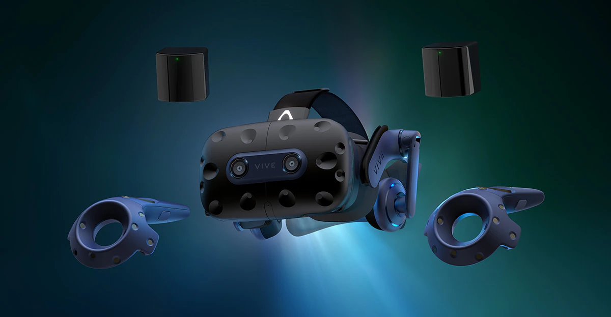

Mudelid
Sellel leheküljel antakse ülevaade erinevatest VR-mudelitest. Nagu alguses mainitud, ei ole VR ainult prillid, vaid ka muud seadmed. Kuid arvutite ja telefonide ülevaatamisel pole mõtet, sest neid teavad juba kõik. Palju huvitavam on vaadata erinevaid VR-prillide mudeleid. Valisime teile välja mõned mudelid, mis meie arvates väärivad tähelepanu.
HTC VIVE Pro 2
Tüüp: Fully-Immersive VR
Hinnaklass: Kõrge (1539€)
Koduleht: vive.com
Resolutsioon: 4896 x 2448 (silma kohta)
Värskendussagedus: 120 Hz
Kaabli pikkus: 5 m
Juhtmevaba: Ei
Portatiivne: Ei
Kõrvaklapid: Jah (On-Ear)
Mikrofon: Jah (Sisseehitatud)
Kirjeldus: HTC VIVE Pro 2 on võimekas VR peakomplekt, mille kõrge resolutsioon ja värskendussagedus tagavad tipptasemel kogemuse. Lisaks on mõeldud ergonoomilisusele. VIVE Pro 2 on reguleeritav nii pea suuruse poolest kui ka silmade laiuse poolest, et vähendada silmade väsimust. Kahjuks on selline võimas VR-komplekt väga kallis. Lisaks sellele, et komplekti hind on 1500 eurot, on vaja ka väga võimsat arvutit, et nii suure resolutsiooniga mugavalt mängida. Aga kui te seda komplekti ostate, siis on teil kõige mugavam ja nauditavam kogemus, mida VR-prillide turul saada saab.
Meta Quest 3
Tüüp: Augmented AR/Fully-Immersive VR
Hinnaklass: Keskmine (~600€)
Koduleht: meta.com
Resolutsioon: 2400x2400 (silma kohta)
Värskendussagedus: 120 Hz
Kaabli pikkus: 5 m (on vaja eraldi osta)
Juhtmevaba: Jah
Portatiivne: Jah
Kõrvaklapid: Jah (Sisseehitatud)
Mikrofon: Jah (Sisseehitatud)
Kirjeldus: Meta Quest 3 on Meta uus virtuaal- ja segareaalsuse peakomplekt, mis tuli välja paar kuud tagasi. Need on esimesed VR-prillid turul, mis võimaldavad VR-režiimide vahetamist. Sul on võimalus näha reaalset reaalsust ja samal ajal juhtida virtuaalreaalsust. Näiteks saab nõudepesu ajal YouTube'i sisse lülitada ja panna sellega aknast kuhugi, kuhu tahad. Meta poes on juba palju rakendusi ja mänge, mis võimaldavad segareaalsusega interakteeruda, alates joonistamisest kuni projekteerimiseni. Need prillid on ka täiesti portatiivsed: sa ei pea neid prille mängimiseks või millekski muuks kasutamiseks ühendama juhtmega oma arvutiga. Ja isegi kui sa tahad neid arvutiga ühendada, saad seda teha wifi kaudu. Kahjuks on neil prillidel ka mõned miinused. Esimene miinus on aku. See on halvasti optimiseeritud ja ilma laadimiseta töötavad prillid umbes 2-2,5 tundi. Isegi arvutiga ühendatuna tühjenevad prillid järk-järgult, kuigi väga aeglaselt. Portatiivses režiimis ei ole palju häid mänge: võimsaid mänge ilma arvutita need prillid käivitada ei suuda. Kaamerad, mille kaudu reaalset maailma vaadatakse, ei ole parimad: pilt on väga teraline. Aga kokkuvõtteks võib öelda, et need prillid on oma raha väärt, sest neil on palju rohkem plusse.